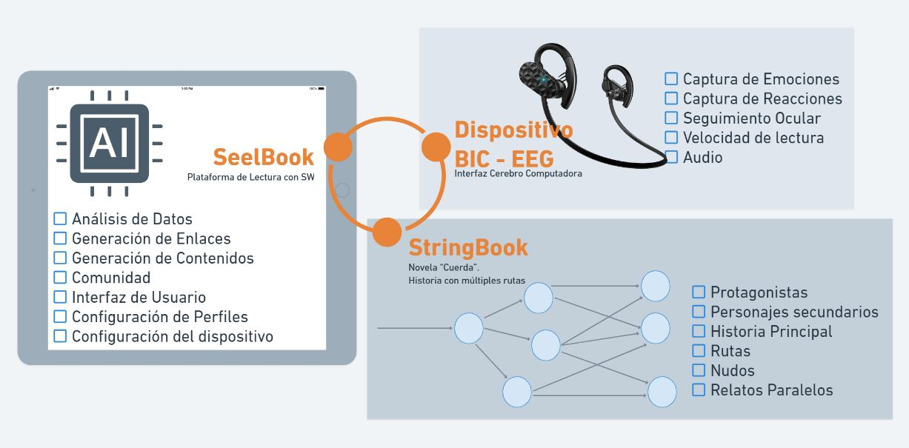
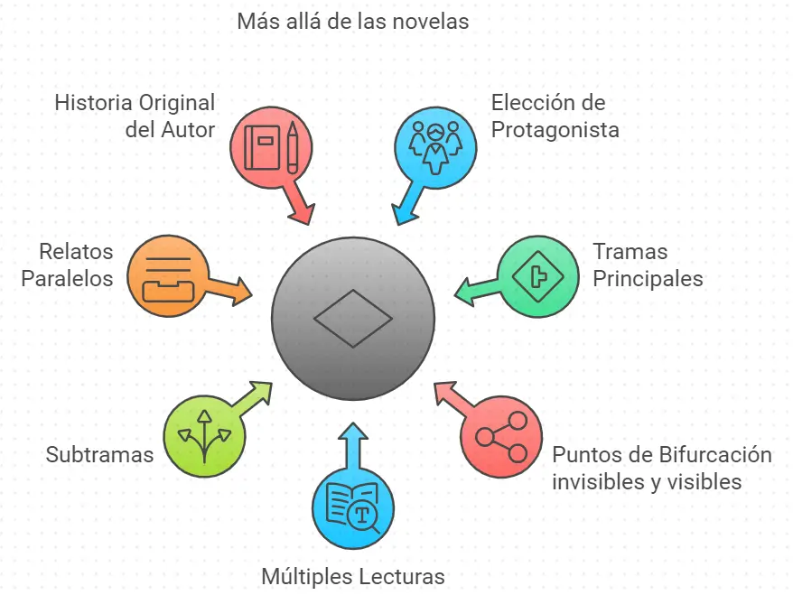

¿Qué es un SelBook?
El término proviene de la combinación de las palabras Libro de Elecciones Subliminales: SelBook = S-El-Book = Subliminal Election Book.
Aunque las elecciones "subliminales" (invisibles e inconscientes) no son el "todo", sí son la parte más esencial de su propuesta. Estas elecciones, establecidas en diferentes puntos de la narración, tienen la capacidad de "adaptar y personalizar" una historia en base a las emociones y reacciones del usuario.
Un SelBook es un “libro” electrónico capaz de adaptar y personalizar la Historia o Relato a los gustos, reacciones y emociones del lector de una forma inconsciente, llevándole por rutas narrativas y generando contenidos multimedia a medida capaces de crear una atmósfera inmersiva, única e irrepetible para el lector/usuario.
Una Experiencia Única e Irrepetible
Gracias a las diferentes alternativas de elección, cada Historia comprada por el usuario será prácticamente única. Dos usuarios que compren la misma "novela", la recorrerán y vivirán de forma diferente, aunque compartirán un argumento central y personajes comunes. Incluso si el mismo usuario la volviera a leer, sería una historia diferente, puesto que la recorrería por rutas distintas.
Definición por sus Características
Para comprender en detalle lo que propone esta idea, la hemos desglosado en sus características principales:
- Adapta el argumento al lector según sus emociones, reacciones y sensaciones.
- Ofrece múltiples "rutas" o tramas dentro de la misma historia, permitiendo múltiples lecturas.
- Permite diferentes géneros como intriga, aventura, suspense o romance dentro del mismo relato.
- La historia tendrá su propia BSO con un tema principal.
- La BSO se adaptará dinámicamente al ritmo de la lectura y a la escena.
- Existirán efectos sonoros coordinados con la lectura.
- Se generarán ilustraciones de refuerzo a demanda para escenas y personajes.
- El usuario decidirá y configurará el grado "subliminal" de las elecciones.
- Decidirá el grado y el momento de activación de los componentes audiovisuales.
- Podrá crear un Avatar/personaje para recorrer la historia (pendiente de estudio).
- Permite una lectura tradicional.
- Ciertos pasajes o situaciones podrán ser recreados en vídeo.
- Video-stories: recreación visual con voz en off y subtítulos.
- Lectura o visionado en formato Cómic.
- Escucha en formato Podcast en cualquier momento.
- Permitirá al usuario elegir entre diferentes personajes para recorrer la historia.
- Permite tomar decisiones directas para ir por una trama u otra.
- Permite tomar acción en ciertos pasajes (controlar un avión, dirigir una incursión...).
- Existirá una IA Anfitriona (Sely) con la que interactuar, preguntar y pedir sugerencias.
Combinación de 3 Elementos
En realidad, Selbook es el nombre genérico que damos a la combinación de los 3 elementos que conforman esta idea. Vamos a verlos uno a uno:

1. StringBook: El Libro Cuerda
El término cuerda ilustra la idea a la perfección: es la combinación de múltiples hilos entrelazados que tienen un principio y fin compartido. Un StringBook no es un relato con múltiples finales. La historia tiene un principio y un final, pero el lector podrá recorrerla por diferentes "hilos", saltando entre ellos en puntos concretos llamados Nudos. Estos nudos podrán ser de 3 tipos: Invisibles-Inconscientes (Subliminales), Visibles-Inconscientes y Visibles-Conscientes.
Cuando terminamos una novela solemos “quedarnos con ganas” de algo más, de conocer la historia no contada de algún personaje… El SelBook resuelve esto, ofreciendo varias diferencias clave:
- Se puede recorrer la historia desde la perspectiva del protagonista que elijamos.
- Dentro de cada ruta, seguirán existiendo tramas, subtramas y saltos temporales como en una estructura tradicional.
- Las tramas secundarias o relatos mencionados podrán ser escritos en su totalidad, formando su propia ruta.
- Existirán “Relatos Paralelos” que complementan la historia (ej: cómo Smeagol se convirtió en Gollum).
- Al acabar, habremos vivido la historia del Autor, pero con la posibilidad de releerla por caminos diferentes o con otro protagonista.

El Sueño de Cualquier Escritor
En el fondo, un StringBook es un libro sin limitaciones físicas, de extensión, de tramas o de estilo. Es un lugar donde un autor puede volcar todo su sueño en toda su dimensión y compartirlo de una forma única, interactiva y personalizada con cada lector.
2. Dispositivo BIC-EEG
Los dispositivos de reconocimiento neuronal (BCI - Brain Computer Interface) son capaces de reconocer, registrar e interpretar nuestra actividad neuronal (EEG - Encefalografía). No es ciencia ficción; reconocen nuestros estados emocionales como miedo, alegría o tensión. Empresas como Emotiv Systems han liderado esta tecnología.
"Su sistema de detección analiza unas 30 expresiones, emociones y acciones diferentes. En lo emocional, EPOC es capaz de reconocer sensaciones de excitación, meditación, concentración, tensión o frustración. La lista de expresiones añaden gestos de sonrisa, risa, enfado, miedo, mirada cruzada y entornada, movimiento direccional del ojo, y otras muecas."
3. La IA, el Cemento de este Proyecto
La idea del Selbook tiene más de 20 años, pero ha sido la "explosión" de la Inteligencia Artificial lo que ha terminado de hacerlo posible, multiplicando sus prestaciones. En un Selbook existirán diferentes Modelos de IA:
Redes Neuronales Convolucionales y Recurrentes
Para crear un perfil emocional del usuario basadas en los datos recogidos por el dispositivo BIC.
Modelos de Aprendizaje por Refuerzo (RL)
Para el análisis de datos y predicciones informadas para la toma de decisiones de ruta.
Redes Generativas (GAN) y Transformers
Modelos de IA Generativa para la creación y edición de todo el contenido multimedia.
Se plantea un dilema o discusión a discutir: ¿La IA escribirá las historias? En su idea original, NO. Pero... ¿podemos "parar" esta evolución? ¿queremos?. El autor "humano" es un valor diferencial importante, también la necesidad de "atraer a sus lectores", esencial para el Network Effect, pero la IA como autora mejoraría muchos aspectos complejos en la fase creativa. Hay que evaluar este aspecto.
Sely: Tu Anfitrión en la Lectura
Esta combinación de IAs estará representada por Sely, un Anfitrión IA único para el usuario. Será su enlace con el sistema, un Copilot accesible desde cualquier punto para realizar peticiones y consultas, y con múltiples funciones:

- Velar por los intereses del usuario
- Charla Inicial de Configuración y Avisos
- Sugerencias de lecturas afines a su perfil
- Charlas literarias sobre sus lecturas
- Atender a Consultas del huésped
- Avisos, notificaciones y recordatorios
- Resumen de lo leído
- Retroceder o recordar cualquier contenido
- Crear una ruta predefinida a petición
- Proteger contra spoilers de la Comunidad